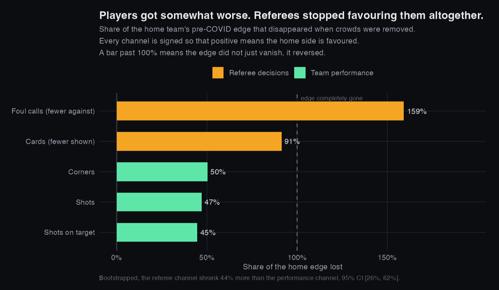
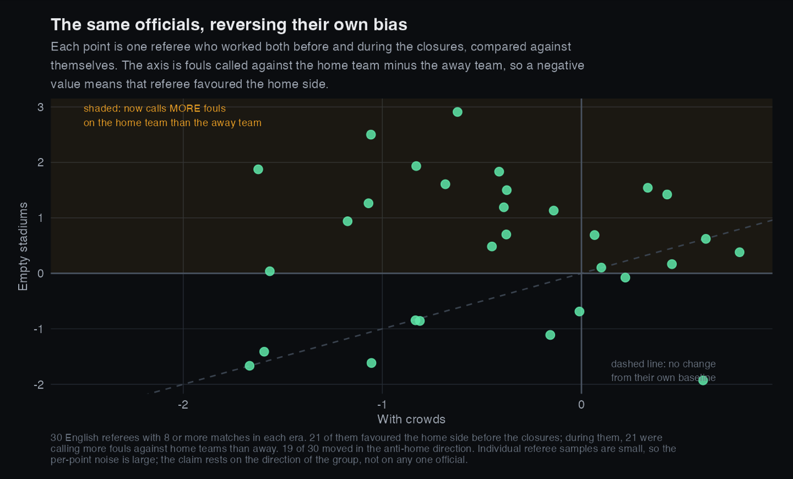
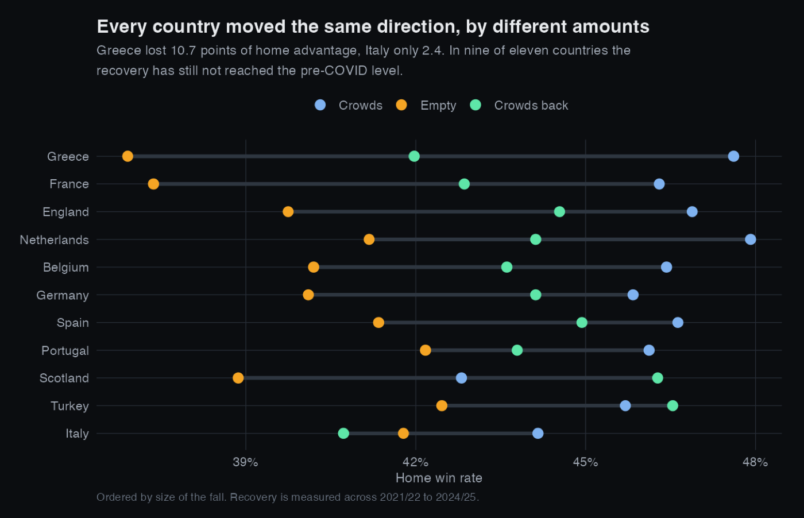

What Empty Stadiums Revealed
Everybody knows home teams win more often. Almost nobody can tell you why. In 2020 every stadium in Europe emptied at the same time, which is about as close to a controlled experiment as football is ever going to give us, and it turns out that what changed most was not the players.
The question and why it can be answered
Home advantage is one of the most reliable effects in sport, and the explanations offered for it are usually a list rather than an answer. The crowd, the travel, the familiar pitch, the referee. All plausible, all tangled together, and normally impossible to separate because they always occur at once.
The 2020 shutdown untangled one of them. Leagues restarted with everything else held roughly constant, the same teams, the same referees, the same competitions, but with the crowd removed. That gives a treatment and a control, and it lets you ask a sharper question than how big home advantage is.
The two candidate mechanisms make opposite, testable predictions. If home advantage comes from the players, empty stadiums should shrink the home team's edge in shots and corners. If it comes from the officials, empty stadiums should shrink the home team's edge in fouls and cards while play itself barely moves. So measure both.
The effect is real and it is large
| Era | Home win | Draw | Away win | Home edge |
|---|---|---|---|---|
| Crowds | 46.1% | 24.4% | 29.6% | 16.5 pts |
| Empty stadiums | 40.4% | 25.6% | 33.9% | 6.5 pts |
| Crowds back | 43.9% | 24.8% | 31.3% | 12.6 pts |
The home win rate fell 5.6 percentage points, with a 95% confidence interval of 3.9 to 7.4 and a p value around 1.4e-10. Put in terms of the gap over away teams, roughly 60% of home advantage disappeared when the crowds did.
It did not disappear entirely, which matters. A 6.5 point edge survived in empty grounds, and that residual is the part a crowd cannot explain: no travel, sleeping in your own bed, a pitch you train on every week.
Now the actual question: what moved?
This is the part that separates a measurement from an explanation. Every channel below is expressed as home minus away and signed so that a positive number means the home side is favoured. For fouls and cards that means flipping the sign, because a home advantage there shows up as fewer calls going against you.
The players got somewhat worse. The referees stopped favouring them altogether. Shots, shots on target and corners each fell by about half. Cards fell by 91%, and the foul differential went past 100%, meaning home teams went from having fewer fouls called against them to having more.
Because those channels are measured in different units, I compared them as a share of their own pre-COVID size and bootstrapped the difference. The referee channel shrank 44% more than the performance channel, 95% CI [26%, 62%], and that ordering held in 100% of 2,000 resamples. Every individual channel change is significant well beyond p < 0.001.
Splitting it by division, 10 of the 11 show the referee channel losing more of its edge than the performance channel. Greece is the single exception, where the order reverses. Eleven leagues run by different federations, and ten of them agreeing, is a stronger argument than the pooled average on its own.
Why I read the card channel and not the foul channel. These are ratios, and a ratio becomes unstable when its denominator is near zero. Spain's pre-COVID foul edge was almost exactly zero, so its foul ratio comes out above 1600%, which is arithmetic rather than a finding. Cards have a larger and more consistent baseline in every division, so that is the channel the country-level comparison rests on.

The objection, and the test that answers it
The first thing a sceptic should say is that this might be selection rather than behaviour. Perhaps different officials were appointed during the closures, and the ones who worked behind closed doors were simply less home-friendly to begin with.
That is checkable. Restrict to referees who officiated in both eras and compare each one against themselves.

Across those thirty referees the foul differential moved from −0.380 to +0.624 and the card differential from −0.239 to +0.036. These are the same individuals reversing their own bias, so the result is not about who was appointed.
How far I would push this. Referee names are recorded for only about a sixth of the matches in the dataset, almost all English and Scottish, and each official has a small number of games per era, so the noise on any single point is large. The thirty plotted here are those with at least eight matches in each era. Dropping that minimum admits three more officials and moves the pooled differential from −0.380 to −0.384 before and from +0.624 to +0.603 during, so the cut is not doing any work. The claim rests on the direction of the group and on the fact that it agrees with the pooled result across all 11 divisions, not on any one referee.
It happened everywhere, and it has not fully come back

Eleven independent leagues moving the same way is the main reason to believe this is not a fluke of one competition. The incomplete recovery is more speculative, and I would not claim to know the cause. It may be capacity limits early in 2021/22, or a genuine shift in how the game is officiated after a season without crowds.
What would undermine this
Three things I would want a reader to weigh against the result.
- Empty stadiums were not the only change. The 2020/21 season also brought five substitutes instead of three and severe fixture congestion. Both plausibly affect play. Neither has an obvious reason to reverse a referee's foul bias, which is why the mechanism split is more robust than the headline number.
- The treatment is approximate. This dataset records no attendance, so era is assigned from national policy dates. A minority of matches inside the empty window had partial crowds. That contamination pushes every estimate toward zero, so the true effect is at least as large as measured, never smaller.
- Fouls are not a clean measure of bias. A foul count reflects how the game was played as well as how it was called. The card result, which moved almost to zero, is the harder one to explain away.
What I would do next
- Model at match level with team and referee fixed effects, rather than comparing group means, which would absorb differences in squad quality and scheduling.
- Use the staggered timing of crowd returns across countries as a proper difference-in-differences design instead of three fixed eras.
- Bring in attendance figures where they exist, so the treatment becomes a dose rather than a switch. A quarter-full stadium is not the same as an empty one.